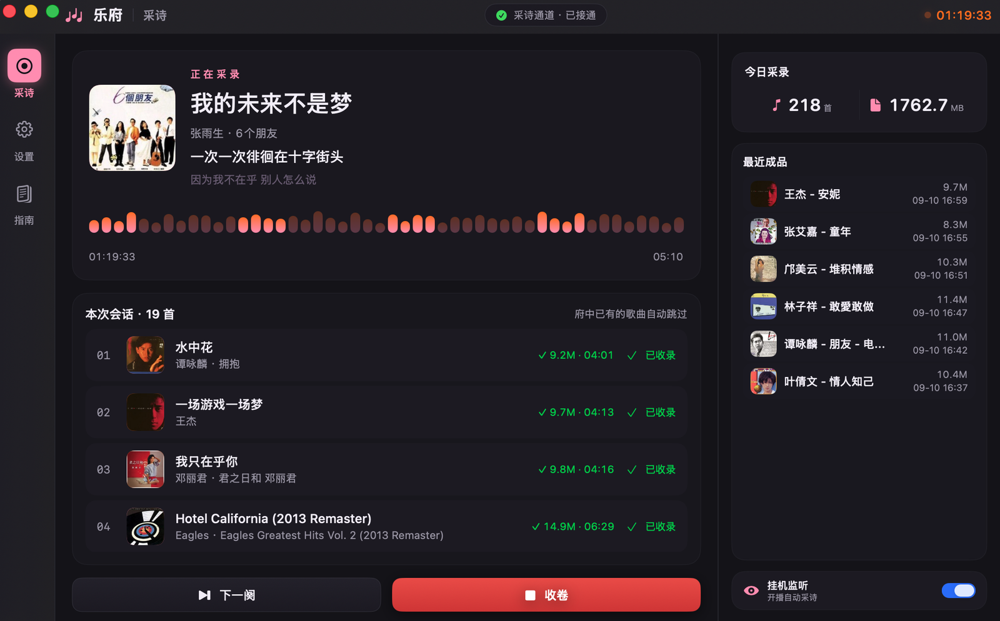
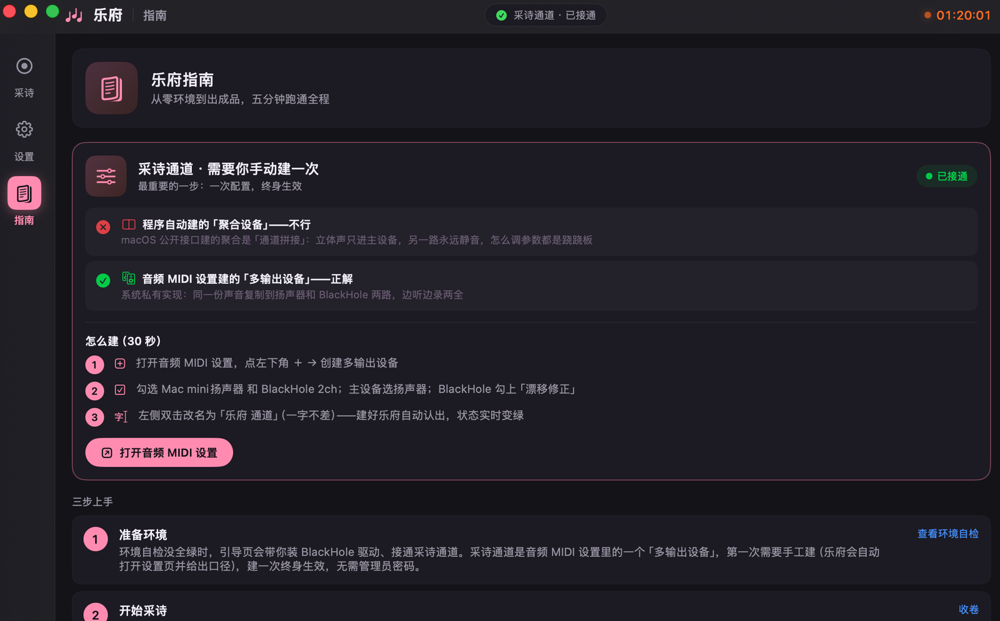

乐府是一款 macOS 应用：在 Mac 上边听汽水音乐、Apple Music、网易云音乐或酷我音乐，边按歌自动录制、裁曲、入库。每首歌直接产出内嵌封面与标签的 MP3，并附带同步歌词文件——不需要事后剪辑，也不会留下一整条剪不断的长录音。
或使用 Homebrew：brew install --cask boxter007/lefu/lefu

围绕"一首歌一个文件"这个目标做减法和加法。
逐首录制架构：切歌的瞬间自动分段，一首一收卷。不做"录完一大段再回来剪"的事。
音源本地（如汽水 KRC）→ 自家缓存 → LRCLIB → 网易云，抓到即存缓存，之后离线也能配上词。
菜单栏常驻，开播自动采诗、停播自动收卷，全程无人值守，听着歌该干嘛干嘛。
LAME 320kbps 编码，ID3 封面与标签内嵌，同步歌词旁挂，归档完就是能直接收藏的样子。
按日期归档到本地，App 内直接看今日成果与最近入库，不用去 Finder 里翻。
MP3 编码器已内置，不需要 Homebrew 装 LAME。唯一的外部组件是 BlackHole 虚拟声卡，App 内可一键装。
从零到第一次收卷，五分钟跑通。App 内「指南」页有全程引导。
虚拟声卡，用来采集系统正在播放的音频。App 内提供一键下载安装，装完在环境自检里会变绿。
这一步必须手动做，名字一字不差。打开「音频 MIDI 设置」→ 左下角 + → 创建多输出设备 → 勾选扬声器与 BlackHole 2ch → 重命名为「乐府 通道」。
配置一次，终身生效。
状态变绿后点「采诗」，正常放歌即可。切歌自动分段，停播自动收卷，成品落在 ~/Music/乐府。
这是项目里最值得讲的一个技术取舍。
macOS 公开接口（AudioHardwareCreateAggregateDevice，哪怕带上 stacked 标记）程序化建出的"聚合设备"是通道拼接：立体声只进主时钟子设备，另一路永远静音，怎么调参数都是跷跷板。
音频 MIDI 设置里的"多输出设备"是系统私有实现，才能把同一份声音复制到两路。
乐府的选择是：不 hack 系统私有接口。引导用户手工建一次（30 秒），换来一个不依赖私有 API、不会被系统更新打断的稳定实现。

全部源码在本仓库，可自行构建或修改。
| 名称 | 乐府（Lefu） |
| 平台 | macOS 13.0+（Apple Silicon 与 Intel 通用二进制） |
| 内录对象 | 汽水音乐、Apple Music、网易云音乐、酷我音乐（本地与在线歌曲） |
| 技术栈 | Swift 5.9 · SwiftUI · CoreAudio · LAME |
| 输出格式 | MP3 320kbps（内嵌 ID3 封面标签）+ .lrc 同步歌词 |
| 默认府库 | ~/Music/乐府，按日期归档 |
| 许可证 | MIT（开源免费） |
| 源码 | github.com/boxter007/lefu |
更完整的 FAQ 在 README 里。
乐府是一款开源免费的 macOS 应用，用于在 Mac 上边听汽水音乐、Apple Music、网易云音乐或酷我音乐边按歌自动录制裁曲，每首歌自动保存为内嵌封面标签的 MP3 并附带同步歌词。
乐府靠虚拟声卡采集系统正在播放的音频。配合「乐府 通道」多输出设备，同一份声音同时进 BlackHole（录制）和扬声器（收听），边听边录互不干扰。
LAME 320kbps CBR，与源音频同为 44.1kHz 采样率，内嵌 ID3v2.3 封面与标签，旁挂 .lrc 同步歌词。
已支持 汽水音乐、Apple Music（macOS 自带「音乐」）、网易云音乐 与 酷我音乐（本地文件与在线歌曲均可；广播直播暂未适配）。采用可扩展的音源架构，后续逐步接入更多播放器。
免费且开源，MIT 许可证，源码全部公开。不存在收费版本。
目前是 ad-hoc 签名。右键 App 选「打开」，或执行 xattr -cr /Applications/乐府.app。这是当前版本的已知限制，后续会做正式签名与公证。